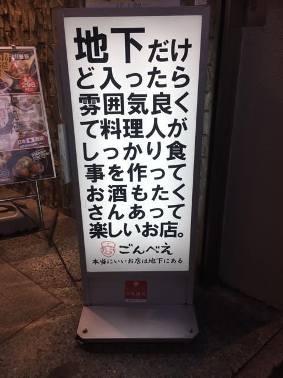
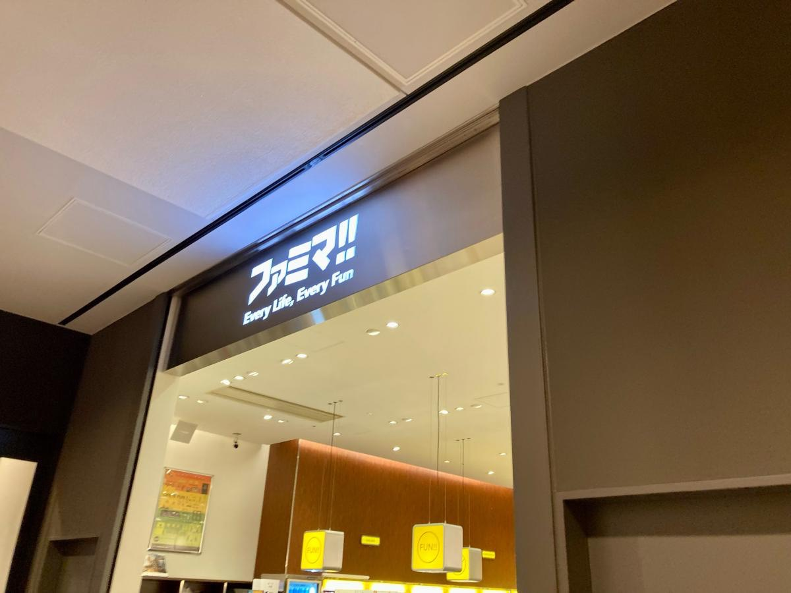
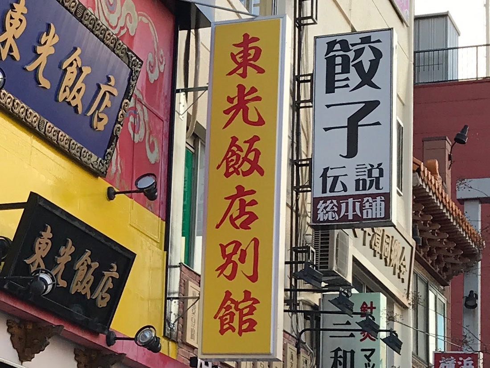

1.
ごんべえ
撮影場所：東京都渋谷区

→文字を並べることによって伝えたいことをしっかりと表現している、ありそうであまりないユニークな看板である。
2.
ファミマ！！
撮影場所：神奈川県横浜市西区

→おなじみのファミリーマートを、我々がいつも略して言っている「ファミマ」にすることによって、人の記憶に残りやすい表現になっている。
3.
餃子伝説
-撮影場所：神奈川県横浜市中区

→かなり横に飛び出していて、目につきやすい看板になっている。
まとめ
ユニークな看板は、やはり目につきやすく、記憶に残りやすいものが多かったです。
その店の特徴が看板によってわかるので、もっといろんな看板を見てみたい。